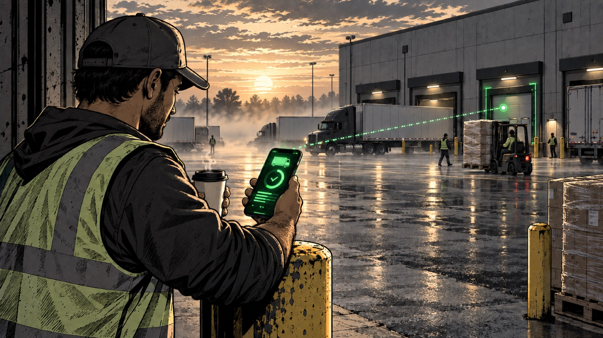
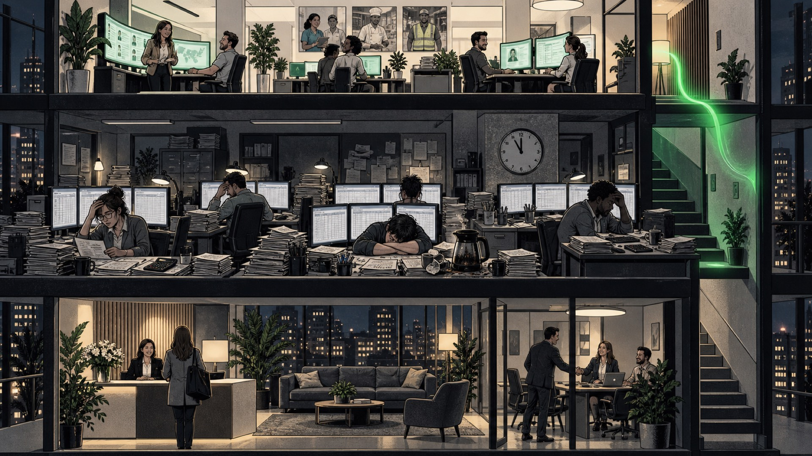
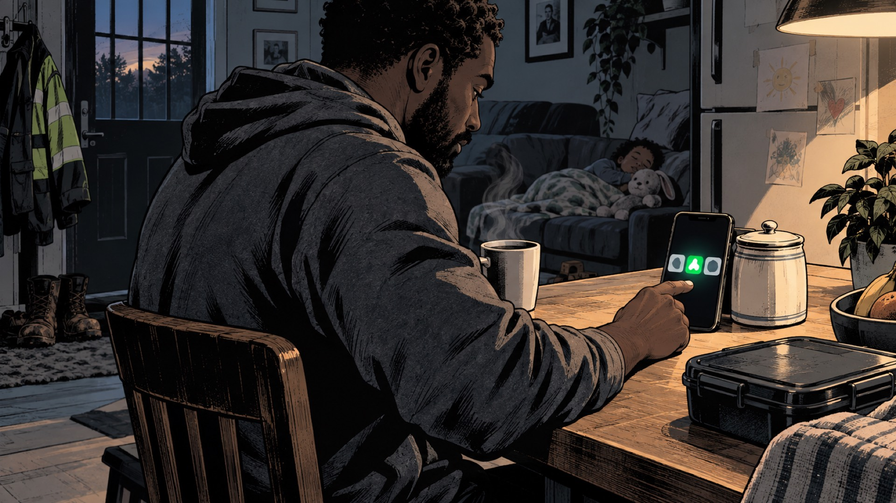
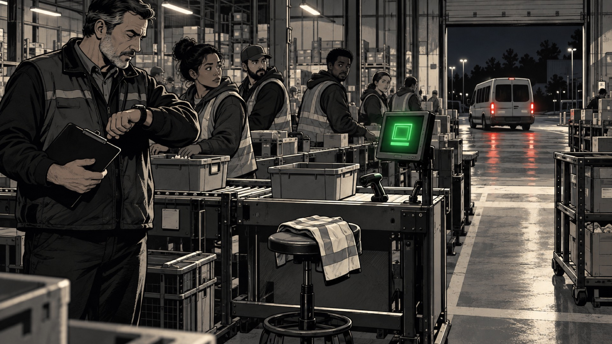
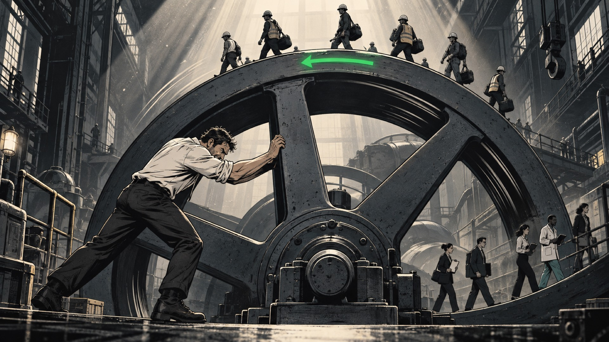
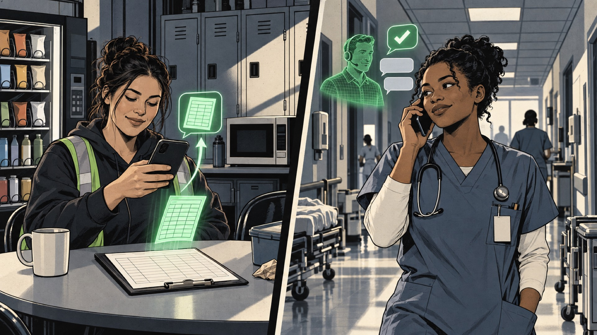
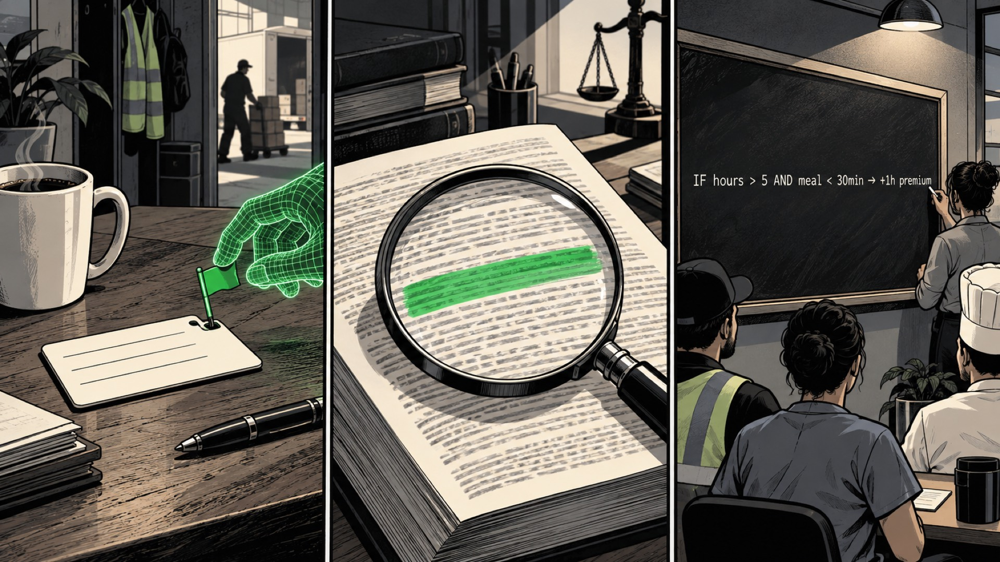
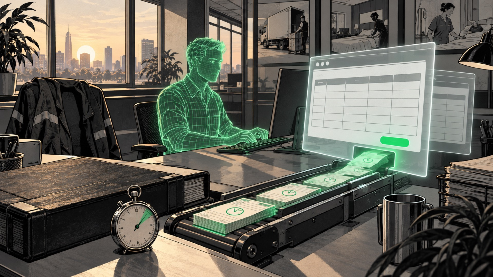

01 · Why we're here
We're here to protect your revenue.
Because you're about to get your lunch eaten by tech-enabled staffing firms. Especially in the age of AI.
02 · The gap
They will build and deploy AI faster than you.
That only accelerates the gap that is already widening between their growth and yours.

03 · Where AI landed first
You've already put AI to work at recruiting and matching.
Workers matched to jobs in real time, with high confidence. That was the first place AI landed.

04 · Where it lands next
The next place AI percolates to is the middle office.
Pay and bill. The better a firm gets at the middle office, the more reliable its worker pool becomes.
05 · Trust
When pay and bill work, workers trust the platform.
They know the payment is coming. They know it's going to be fast. They know it's going to be accurate.
06 · Churn
Pay them wrong and the door starts revolving.
Workers churn less when you pay them right. A rotating door of workers hits reliability directly, and compromised reliability is compromised revenue.

07 · The worker's marketplace
Every day, workers choose between you and two others.
That is the nature of flex work: everyone has flexibility. Every single day you have to make a good impression on the best, most reliable workers. Their marketplace is their phone.

08 · The cost of getting it wrong
Pay the wrong amount at the wrong time, and they pick another platform.
Worse yet, they leave you hanging at the last minute.
09 · The customer's marketplace
Every day, your customers are choosing too.
On the VMS they decide whether to pull workers from you or from the new kids on the block. Their marketplace is the VMS.

10 · The flywheel
If you don't pay workers as excellently as the new guys, the flywheel reverses.
Reliable workers win customers. Customers bring shifts. Shifts keep workers. Lag on pay, and it turns the other way.
11 · One coin
Revenue protection and worker retention are two sides of the same coin.
Neither is ever locked in. Both sides can choose again tomorrow. Which is why you cannot afford to lag, and why the middle office cannot be an afterthought.
12 · Product
Data auto-ingests, with AI.
A digital worker logs into UKG, ADP, Ubeya, 7shifts or whatever your sites already run, in a virtual browser, and pulls punches and schedules out on a cadence. No integration project.
13 · Product
Location is tracked in real time.
Every worker's phone reports where they actually are. Arrivals, departures and gaps show up on the map while the shift is happening, not at the end of the week.

14 · Product
Paper timesheets come in by text. Clock-ins by text and phone call.
A photo of the clipboard is enough. When a punch is missing, the agent texts or calls the worker and takes the answer. No app to install, nothing for a clerk to key in.

15 · Product
Payroll rules are applied to every shift.
The agent raises the flag. The flag points at one paragraph in the wage order or the client contract. That paragraph is compiled into one line the engine runs on every shift.
16 · Product
Discrepancies are mediated agentically.
A disputed break, an extra hour, a missing clock-out. The agent takes it to the worker and the supervisor while it is fresh, collects the answers and closes it out with the evidence attached.

17 · Product
Then it goes to payroll. As fast as possible, agentically.
The same digital worker logs into ADP, Paylocity or Gusto and uploads the approved hours through the browser the moment the cycle closes. Held shifts wait with their reason. Everyone else gets paid right, on time.